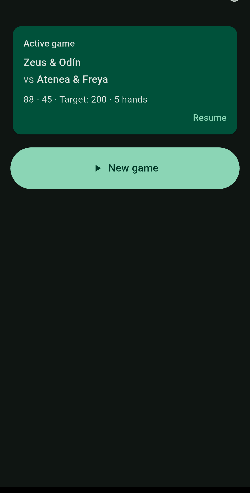
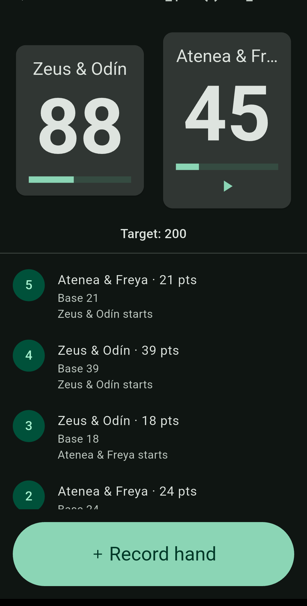
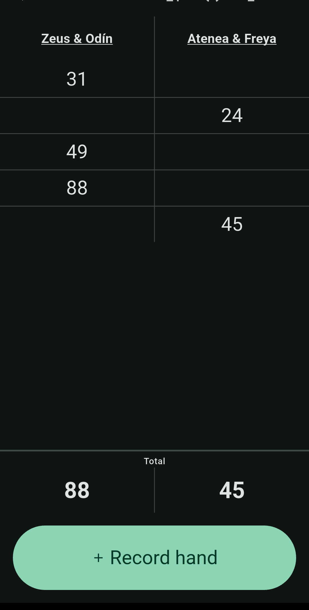
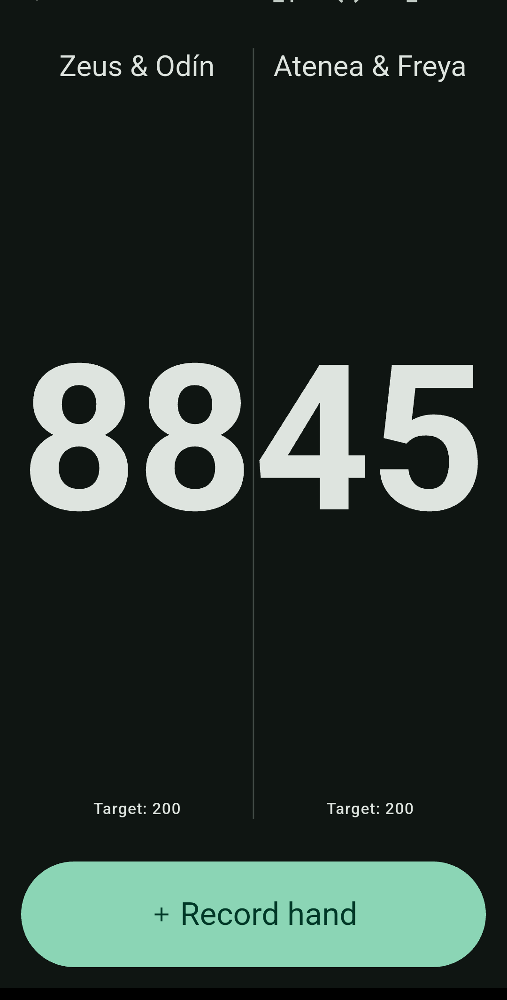
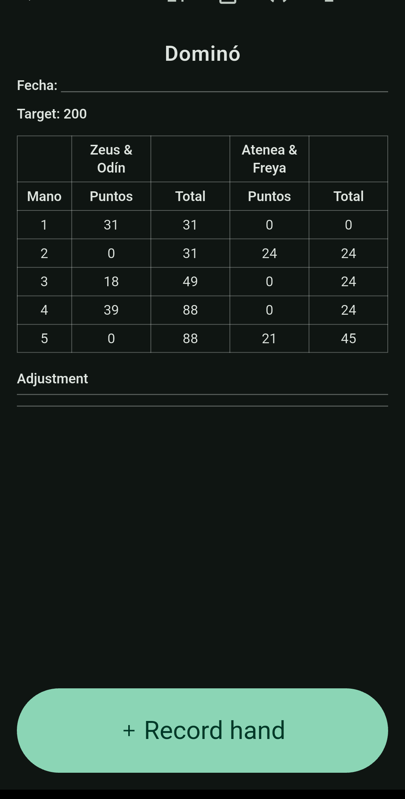
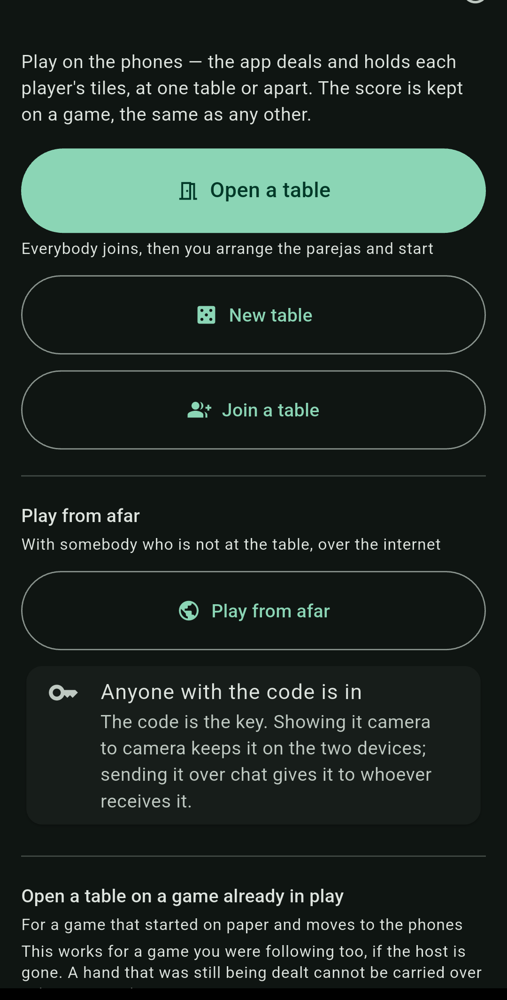
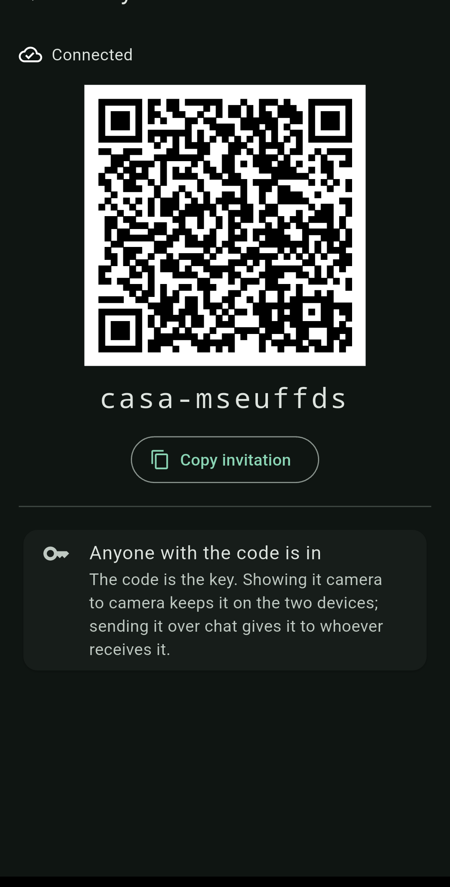
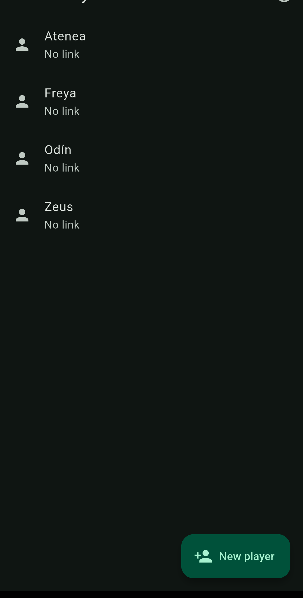
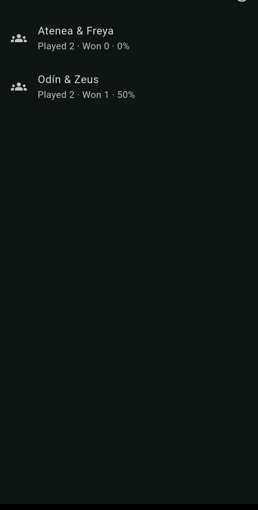
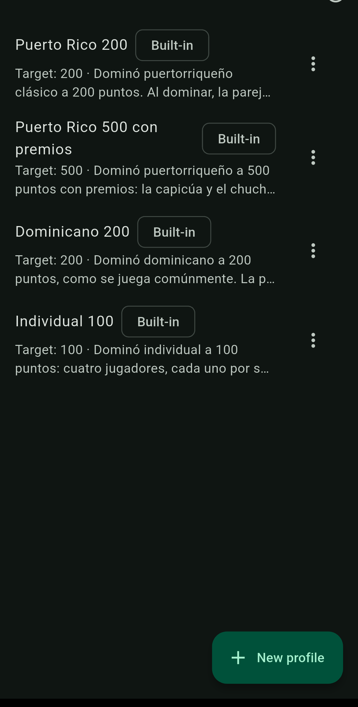

What it does
Dominada keeps score for a game of dominoes: who scored, how much, and how the teams stand. It is built for the table — figures big enough to read from the other side, one screen to record a hand, and a screen that will not sleep while a game is open.
How to use it
1. Start a game
Pick the rule profile — Puerto Rico 200 and 500 with bonuses are included — and pick the players from your list. Players are saved once and chosen from a list afterwards, so nobody types names every game. Say who leads first and you are off.
2. Record each hand
When a hand ends, tap Anotar mano. Say whether someone went out — and for which team — or whether the hand was blocked, then enter the pips each side was left holding. If the profile has bonuses, you tick them there. Got it wrong? Undo removes the last entry.
3. Read it the way you like
The scoreboard comes three ways, switched from the board itself:
- Card — large totals and every hand broken down.
- Notepad — the way it is written on paper: names underlined across the top, a rule between the columns, and each hand's points written down the column of whoever won it.
- Large — totals only, as big as they fit.
What it looks like
Swipe for more →










Playing in the app, not only scoring
Dominada also deals and plays. The app shuffles, each person sees only their own tiles, and the rules enforce themselves: it will not let you pass while holding a tile that fits, and a move that does not work is refused with the rule that refused it.
At the same table
One person opens the table and the others find it on the same Wi-Fi — no address to type. If the network blocks that, there is a six-letter code to read aloud, a QR code, and typing the address by hand. No internet, no account, and nobody's server: the devices talk directly.
The lobby: everyone arrives, then the teams are arranged
Open a lobby and people join it. Whoever opened it arranges who partners whom, and the game is created once everybody is there — with the seating already right. When you join you pick your own seat and are placed in it.
Apart, over the internet
When you are not in the same place, the game goes through a relay. The relay cannot read any of it: what passes through is encrypted with a key derived from the invitation code, and the relay never receives that key. Each person's hand is sealed separately as well, so not even the other players can see your tiles.
The invitation code is the key. Anyone holding it is in, exactly like a group invite link. Showing it camera to camera keeps it on the two devices; sending it over chat gives it to whoever receives it.
Everyone keeps a copy
Every device at the table stores the game as it is played, so if the person who opened it runs out of battery, somebody else picks it up. The one thing that cannot be inherited is a hand still in progress: the shuffle stays secret until the hand ends — deliberately, so that nobody can invent a deal — which is exactly why no other device can honestly continue one.
Watching without playing
Somebody who is not playing joins as a watcher: they see the game and cannot record anything. That is not enforced by hiding buttons — the device running the game refuses whatever a watcher sends. And any device can switch to table mode: totals only, as big as they fit, for a propped-up tablet or a TV.
The official scoresheet
The tournament form, ruled the way the paper one is. It exports as an image for a group chat and as a real PDF — selectable text and fillable cells, not a picture of a table.
Templates are named fields rather than coordinates: a club decides what appears and what each thing is called, and the app draws it.
Records, teams and rivalries
Every player keeps a record — games played and won, win rate, points for and against, bonuses earned — and the list of games they were in.
Teams do not have to be created: they fall out of the games played. If two people played together, there is the team with its record, and you can name it. Once two teams have met a few times the app builds the rivalry: their history against each other, on a card you can share.
Backup and recovery
Everything of yours — games, players, profiles, sheet templates, and the photos if you want them — goes into a single file, wherever you say. It comes back from that same file on another device, or on the same one after a reinstall.
On recovery the app tells you what it found and what it replaced, rather than merging in silence.
Rule profiles
No two tables play quite the same, and the app does not choose for you. A profile says what you play to, whether you must land exactly, how many sides and players per side, whose tiles are counted, what happens when a blocked hand ties, who leads next, and which bonuses pay.
The included profiles can be copied and edited, or make your own. The profile is stored inside the game: changing or deleting it later cannot move a single point in a game already played.
Everyone keeps a copy
A finished game can be shared with everyone who played it. Whoever receives it imports it and it lands in their own history with the players recognised. If the app cannot place someone it says so, and you add or link them yourself — two people are never merged just because they share a name. Importing the same game twice replaces it instead of duplicating it.
No account, no internet, and nobody has to run a server: it travels like any other file.
Questions
Do I need internet?
For scorekeeping, no: everything is stored on your device and the app works fully offline. For playing at the same table, also no — you just need to be on the same Wi-Fi, even one with no internet behind it. It is only needed to play with somebody who is not with you.
Do I need an account?
There are no accounts and no sign-up.
Does it work for Dominican, Cuban or other rules?
The engine does not know where the rules come from: what is Puerto Rican lives in the included profiles, not in how it counts. It ships with Puerto Rico 200, 500 with bonuses, Dominican 200 and Individual 100 — that last one four players each on their own rather than in teams. Tables vary, so each profile says which convention it follows. If your table plays differently, make a profile.
Can I play against someone through the app?
Yes. At the same table over Wi-Fi, or apart over the internet. The app deals, each person sees only their own tiles, and the rules enforce themselves.
If I play remotely, who can see my tiles?
Nobody. Your hand is encrypted with a key only your device holds — neither the relay it passes through nor the other players can open it. The relay cannot read the rest of the game either: that is not a promise, it simply has nothing to read it with.
Do I need an account to play remotely?
No. The invitation code is all it takes — and for that reason anyone holding the code is in, exactly like a group invite link. Showing it camera to camera keeps it on the two devices.
What if the person running the game loses battery?
Everyone stores the game as it is played, so somebody else picks it up. The only thing lost is a hand still in progress, because the shuffle stays secret until the hand ends — which is precisely what stops anyone inventing a deal.
Can I use a tablet or a TV as the table?
Yes, with table mode: totals only, as big as they fit, and the screen stays awake. A watcher cannot record anything.
Something wrong, or an idea?
Bugs and ideas are reported on GitHub, in the open, so you can read what someone else has already reported before writing your own. Spanish or English, either is fine.
If you would rather it were not public — or it is a security problem — write to cacique@boriken.dev.
Privacy
Dominada collects nothing. No accounts, no analytics, and your games stay on your device until you choose to share one. Privacy policy.